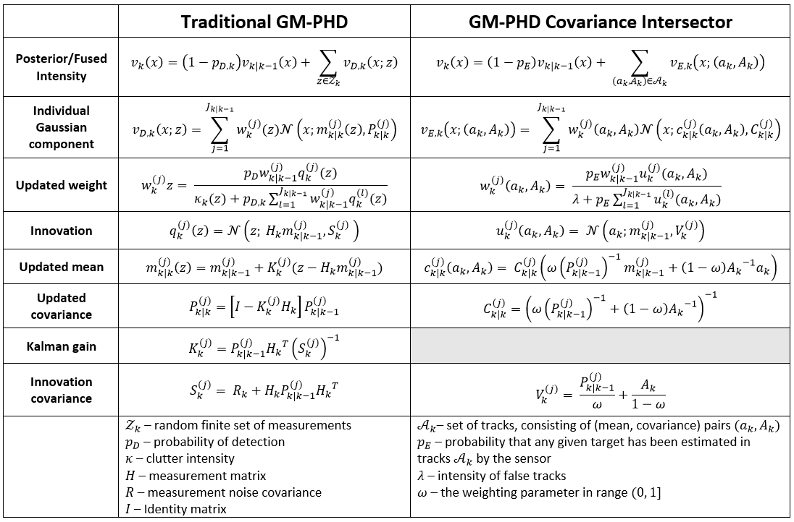
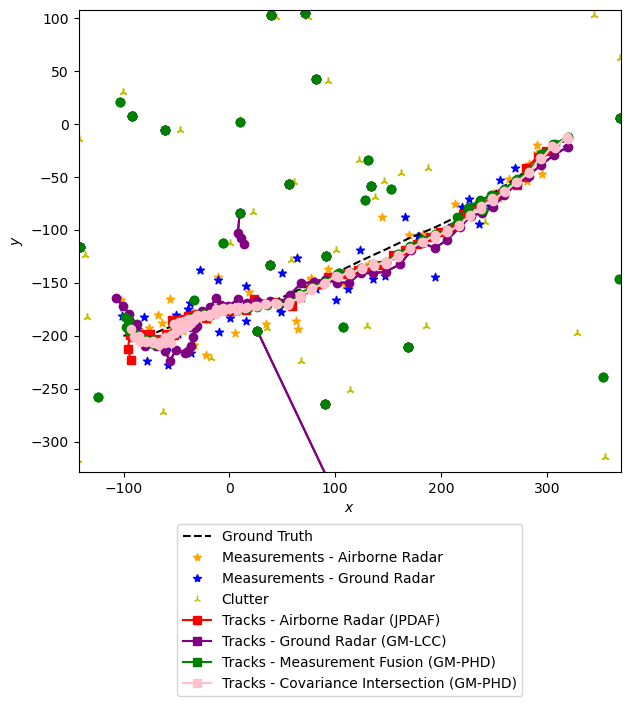
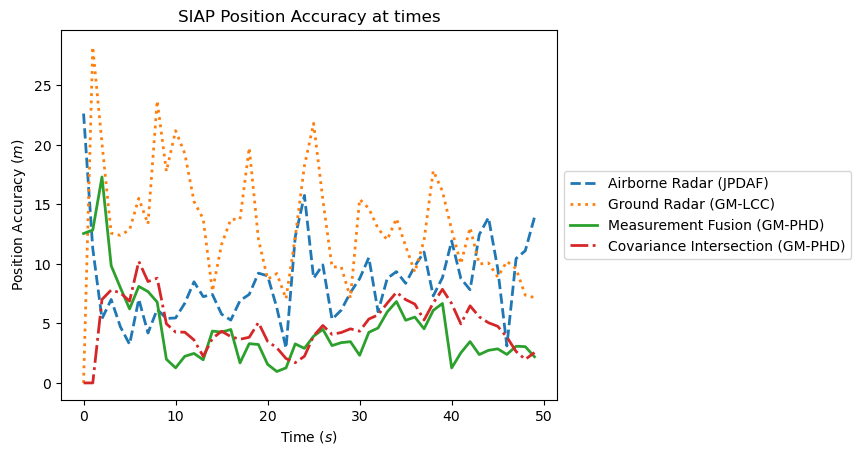
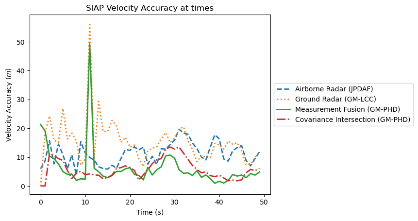
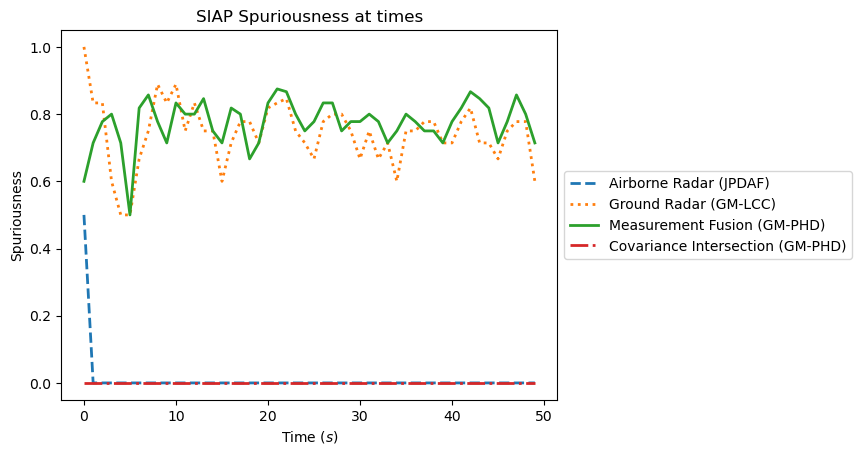
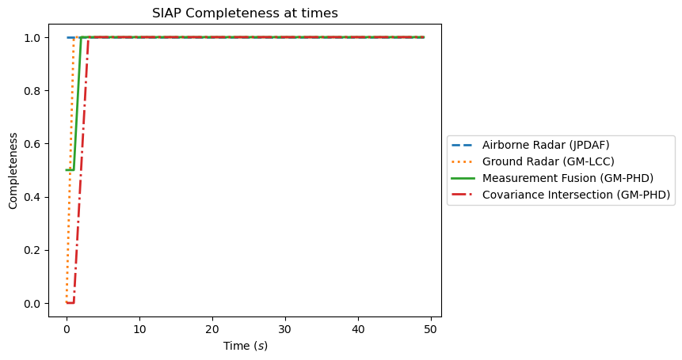
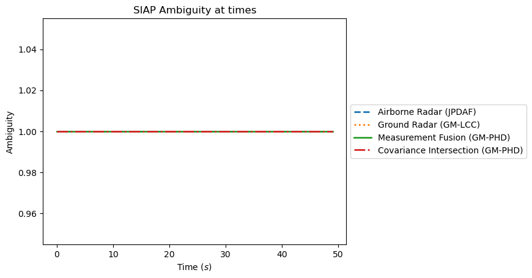
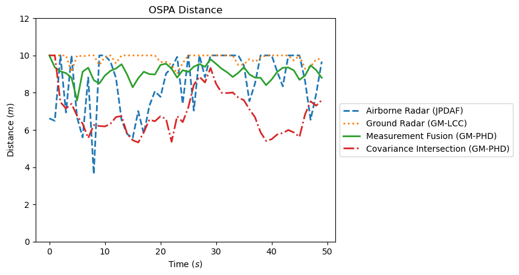
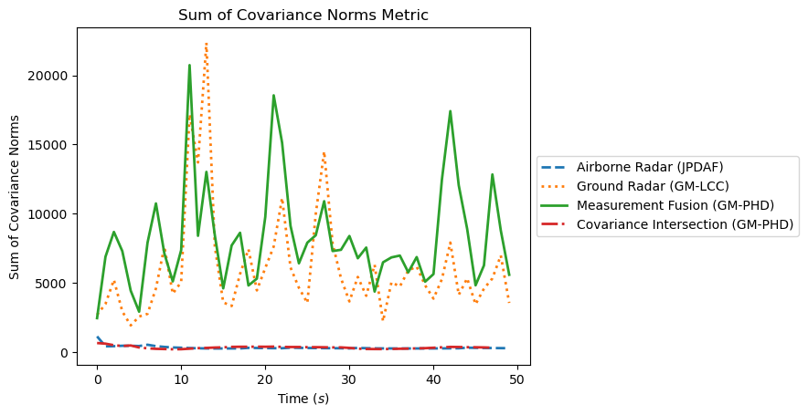
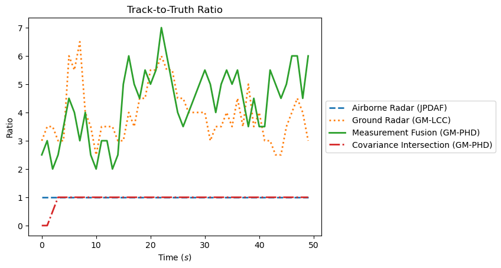

Note
Click here to download the full example code or to run this example in your browser via Binder
Multi-Sensor Fusion: Covariance Intersection Using Tracks as Measurements
Background
The Covariance Intersection Algorithm from Julier and Uhlmann 1 is a popular algorithm for track-to-track fusion in target tracking systems. This approach is highly appealing due to its robustness, simple structure, and applicability to any tracking system that uses Gaussians as the basis for tracking. Generalisations to non-Gaussian systems have been proposed based on the exponential mixture density structure of the algorithm. The approach is based on a simple rule called the Chernoff Fusion Rule. However, due to the non-Bayesian formulation of the rule, it cannot be integrated straightforwardly into multi-target tracking algorithms which are based on Bayesian formulations.
A new Bayesian formulation for covariance intersection was recently proposed which allows for the integration of the approach into multi-target tracking algorithms. 2 The new formulation recasts the fusion rule as a Bayesian update rule that calculates a normalisation constant which enables integration into different multi-target tracking algorithms.
In this example we demonstrate the approach with different multi-target trackers in a multi-platform scenario where the sensors output estimated target tracks instead of raw measurements. In real life situations, such sensors make multi-target tracking more accessible to new researchers because the researchers don’t have to know about or implement target filtering and/or tracking algorithms on their own. However, when there are multiple sensors measuring the same target space and they all produce estimated tracks, as demonstrated in this example, it is not immediately clear how to combine this information into a single set of tracks. This is where covariance intersection comes in.
The concept of covariance intersection relies on the aforementioned Chernoff fusion rule 3 :
In situations where \(p_1(x)\) and \(p_2(x)\) are multivariate Gaussian distributions, this formula is equal to the Covariance Intersection Algorithm from Julier and Uhlmann. In the Covariance Intersection Algorithm, the weighting parameter, \(\omega \in [0, 1]\) is chosen using an optimization algorithm. In this example, we have set it to \(0.5\) for simplicity.
We also introduce the following identity. Given two Gaussians, \(N(x ; a, A)\) and \(N(x ; b, B)\) with the same dimension, we have:
where
This example considers the Gaussian mixture probability hypothesis density (GM-PHD) algorithm as the tracker for the track-to-track fusion. The following table shows the formulas used in the regular GM-PHD, and the GM-PHD covariance intersector algorithm.
{kind=link}
The specifics for implementing the Covariance Intersection Algorithm in several popular multi-target tracking algorithms was expanded upon recently by Clark et al 4. The work includes a discussion of SMART FUSION and and is used as the basis for this example.
- The rest of this example will continue as follows:
Create a simulator for the ground truth
Create 2 radar simulators, one on the ground and one that is airborne
Make a JPDA tracker for the first radar, and a Gaussian mixture linear complexity with cumulants (GM-LCC) tracker for the second. These will mimic the situation where the radar sensors outputs tracks instead of raw measurements.
Create a GM-PHD tracker that will perform measurement fusion, using all measurements from both radars. This is created to compare with the covariance intersection method.
Create a GM-PHD tracker that will perform track fusion via covariance intersection using the
ChernoffUpdaterclass.Create metric managers for each of the four trackers
Set up the detection feeders. Each tracker will receive measurements using a custom
DummyDetectorclass. The track fusion tracker will also use theTracks2GaussianDetectionFeederclass.Run the simulation
Plot the resulting tracks and the metrics over time
from copy import deepcopy
import numpy as np
from datetime import datetime
start_time = datetime.now()
num_steps = 50
1: Create a Ground Truth Simulator
We will simulate the paths of two targets using the MultiTargetGroundTruthSimulator.
We can dictate the starting states of the two targets using the preexisting_states parameter.
The targets start at [-100, -200, 500] and [0, 300, 500] respectively. Their initial velocities
are [4, 0.5, 0] and [5, -0.5, 0] and they move according to a constant velocity transition model
with noise.
from smartfusion.models.transition.linear import CombinedLinearGaussianTransitionModel,\
ConstantVelocity
truth_transition_model = CombinedLinearGaussianTransitionModel(
(ConstantVelocity(0.5), ConstantVelocity(0.5), ConstantVelocity(0.5)))
from smartfusion.simulator.simple import MultiTargetGroundTruthSimulator
from smartfusion.types.state import GaussianState
gt_simulator = MultiTargetGroundTruthSimulator(
transition_model=truth_transition_model,
initial_state=GaussianState([0, 0, 0, 0, 500, 0], np.diag([100, 1, 100, 1, 100, 1]),
timestamp=start_time),
birth_rate=0,
death_probability=0,
number_steps=num_steps,
preexisting_states=[[-100, 4, -200, 0.5, 500, 0], [0, 5, 300, -0.5, 500, 0]]
)
2: Create Two Radars and a Detection Simulation
The two radars can share the same clutter model.
from smartfusion.models.clutter.clutter import ClutterModel
clutter_model = ClutterModel(
clutter_rate=2.0,
distribution=np.random.default_rng().uniform,
dist_params=((-600.0, 600.0), (-600.0, 600.0), (250.0, 750.0))
)
The first radar will be airborne, at an altitude of approximately 3000 m. It makes detections with an elevation, bearing, and range measurement model. By setting the max_range to 3500, we can ensure that it does not make detections of the other radar (which will be far away on the ground). We will later do a similar thing with the second radar. This mimics a real-life scenario where each radar is outside the field-of-view of the other.
from smartfusion.sensor.radar.radar import RadarElevationBearingRange
from smartfusion.types.array import CovarianceMatrix
from smartfusion.types.array import StateVector
from smartfusion.platform.base import MovingPlatform
from smartfusion.types.state import State
radar1 = RadarElevationBearingRange(
ndim_state=6,
position_mapping=(0, 2, 4),
noise_covar=CovarianceMatrix(np.diag([np.deg2rad(0.005), np.deg2rad(0.005), 0.05])),
mounting_offset=StateVector([10, 0, 0]),
clutter_model=clutter_model,
max_range=3500
)
# Mount the radar onto a moving platform. The platform starts at [-250, 50, 3000]
# with velocity [1, 5, 0] and moves according to a constant velocity model with low noise
sensor1_initial_loc = StateVector([[-250], [1], [50], [5], [3000], [0]])
initial_state = State(sensor1_initial_loc, start_time)
sensor1_transition_model = CombinedLinearGaussianTransitionModel(
[ConstantVelocity(0.3), ConstantVelocity(0.3), ConstantVelocity(0.3)])
sensor1_platform = MovingPlatform(
states=initial_state,
position_mapping=(0, 2, 4),
velocity_mapping=(1, 3, 5),
transition_model=sensor1_transition_model,
sensors=[radar1]
)
The second radar will be stationary on the ground at the point [2000, 50, 0]. This radar also measures in 3D using bearing, range, and elevation.
radar2_noise_covar = CovarianceMatrix(np.diag([np.deg2rad(0.005), np.deg2rad(0.005), 0.05]))
radar2 = RadarElevationBearingRange(
ndim_state=6,
position_mapping=(0, 2, 4),
noise_covar=radar2_noise_covar,
clutter_model=clutter_model,
max_range=3000
)
# Make a platform and mount the radar
from smartfusion.platform.base import FixedPlatform
sensor2_platform = FixedPlatform(
State([2000, 0, 50, 0, 0, 0]),
position_mapping=[0, 2, 4],
sensors=[radar2]
)
Now we can pass the platforms into a detection simulator. At each timestep, the simulator will return the detections from the sensor1_platform, then the detections from the sensor2_platform.
from smartfusion.simulator.platform import PlatformDetectionSimulator
radar_simulator = PlatformDetectionSimulator(
groundtruth=gt_simulator,
platforms=[sensor1_platform, sensor2_platform]
)
Let’s briefly visualize the truths and measurements before we move on. Note that the final simulation will not have the same truths because the ground truth generator is randomized. But this gives an idea of what it will look like. The detections from the first sensor (airborne) will be plotted in blue, and the detections from the second sensor are in red. The clutter from both sensors are plotted in yellow. The sensor locations will be plotted in green Xs.
from smartfusion.plotter import Plotter, Dimension
# Lists to hold the detections from each sensor and the path of the airborne radar
s1_detections = []
s2_detections = []
radar1_path = []
# Extract the generator function from a copy of the simulator
sim = deepcopy(radar_simulator)
g = sim.detections_gen()
# Iterate over the time steps, extracting the detections, truths, and airborne sensor path
for _ in range(num_steps):
s1_detections.append(next(g)[1])
s2_detections.append(next(g)[1])
radar1_path.append(sim.platforms[0].position)
truths = set(sim.groundtruth.groundtruth_paths)
# Plot the truths and detections
plotter = Plotter(dimension=Dimension.THREE)
plotter.plot_ground_truths(truths, [0, 2, 4])
plotter.plot_measurements(s1_detections, [0, 2, 4], color='blue')
plotter.plot_measurements(s2_detections, [0, 2, 4], color='red')
# Plot the radar positions
plotter.ax.plot(*zip(*radar1_path), marker='x', color='green')
plotter.ax.plot(2000, 50, 0, marker='x', color='green')
[<mpl_toolkits.mplot3d.art3d.Line3D object at 0x16d458fd0>]
3: Make Trackers for the Radars
The airborne radar will be tracking using a JPDA tracker, and the stationary one will use a GM-LCC. These trackers will not be given the platform detection simulation objects as parameters, we will feed the measurements later to ensure that that the same measurements are used in the fusion trackers. To start, we can calculate the clutter spatial density.
JPDA Tracker
from smartfusion.hypothesiser.probability import PDAHypothesiser
from smartfusion.updater.kalman import ExtendedKalmanUpdater
from smartfusion.predictor.kalman import ExtendedKalmanPredictor
from smartfusion.dataassociator.probability import JPDA
from smartfusion.deleter.error import CovarianceBasedDeleter
from smartfusion.initiator.simple import MultiMeasurementInitiator
from smartfusion.tracker.simple import MultiTargetMixtureTracker
# Updater
jpda_updater = ExtendedKalmanUpdater(measurement_model=None)
# Data Associator
predictor = ExtendedKalmanPredictor(truth_transition_model)
hypothesiser = PDAHypothesiser(
predictor=predictor,
updater=jpda_updater,
clutter_spatial_density=clutter_spatial_density,
prob_detect=0.9
)
data_associator = JPDA(hypothesiser=hypothesiser)
# Deleter
covariance_limit_for_delete = 500
deleter = CovarianceBasedDeleter(covar_trace_thresh=covariance_limit_for_delete)
# Initiator
s_prior_state = GaussianState([0, 0, 0, 0, 500, 0], np.diag([0, 50, 0, 50, 0, 50]))
from smartfusion.hypothesiser.distance import DistanceHypothesiser
from smartfusion.measures import Mahalanobis
hypothesiser = DistanceHypothesiser(
predictor,
jpda_updater,
measure=Mahalanobis(),
missed_distance=3
)
from smartfusion.dataassociator.neighbour import GNNWith2DAssignment
initiator_associator = GNNWith2DAssignment(hypothesiser)
initiator_deleter = CovarianceBasedDeleter(covar_trace_thresh=500)
initiator = MultiMeasurementInitiator(
prior_state=s_prior_state,
measurement_model=None,
deleter=initiator_deleter,
data_associator=initiator_associator,
updater=jpda_updater,
min_points=2
)
jpda_tracker = MultiTargetMixtureTracker(
initiator=initiator,
deleter=deleter,
detector=None,
data_associator=data_associator,
updater=jpda_updater
)
GM-LCC Tracker
from smartfusion.updater.pointprocess import LCCUpdater
from smartfusion.hypothesiser.distance import DistanceHypothesiser
from smartfusion.measures import Mahalanobis
from smartfusion.hypothesiser.gaussianmixture import GaussianMixtureHypothesiser
from smartfusion.mixturereducer.gaussianmixture import GaussianMixtureReducer
from smartfusion.types.state import TaggedWeightedGaussianState
from smartfusion.tracker.pointprocess import PointProcessMultiTargetTracker
# Updater
kalman_updater = ExtendedKalmanUpdater(measurement_model=None)
updater = LCCUpdater(
updater=kalman_updater,
clutter_spatial_density=clutter_spatial_density,
normalisation=True,
prob_detection=0.9,
prob_survival=0.9,
mean_number_of_false_alarms=clutter_model.clutter_rate,
variance_of_false_alarms=100
)
# Hypothesiser
kalman_predictor = ExtendedKalmanPredictor(truth_transition_model)
base_hypothesiser = DistanceHypothesiser(
predictor=kalman_predictor,
updater=kalman_updater,
measure=Mahalanobis(),
missed_distance=15,
include_all=False
)
hypothesiser = GaussianMixtureHypothesiser(
base_hypothesiser,
order_by_detection=True
)
# Reducer
reducer = GaussianMixtureReducer(
prune_threshold=1E-3,
pruning=True,
merge_threshold=200,
merging=True
)
# Birth component
birth_covar = CovarianceMatrix(np.diag([10000, 10, 10000, 10, 10000, 10]))
birth_component = TaggedWeightedGaussianState(
state_vector=[0, 0, 0, 0, 500, 0],
covar=birth_covar**2,
weight=0.5,
tag=TaggedWeightedGaussianState.BIRTH,
timestamp=start_time
)
# Tracker
gmlcc_tracker = PointProcessMultiTargetTracker(
detector=None,
hypothesiser=deepcopy(hypothesiser),
updater=deepcopy(updater),
reducer=deepcopy(reducer),
birth_component=deepcopy(birth_component),
extraction_threshold=0.90,
)
4: Make GM-PHD Tracker For Measurement Fusion
This tracker can use many of the same elements as the GM-LCC one.
from smartfusion.updater.pointprocess import PHDUpdater
updater = PHDUpdater(
kalman_updater,
clutter_spatial_density=clutter_spatial_density,
prob_detection=0.9,
prob_survival=0.9
)
meas_fusion_tracker = PointProcessMultiTargetTracker(
detector=None,
hypothesiser=deepcopy(hypothesiser),
updater=deepcopy(updater),
reducer=deepcopy(reducer),
birth_component=deepcopy(birth_component),
extraction_threshold=0.90,
)
5: Define a GM-PHD Tracker for Track Fusion
Track fusion using covariance intersection is implemented in SMART FUSION using the
ChernoffUpdater class. For use in a GM-PHD, we insert the ChernoffUpdater as
the base updater, instead of a typical KalmanUpdater. The clutter_spatial_density
parameter now refers to the estimated intensity of false tracks. Since the previous tracker will
(hopefully) have ignored some of the clutter, we can use a smaller intensity than in the previous
trackers. The omega parameter is also adjustable. We will set it to 0.5 for now.
The remaining tracker parameters have been kept the same as the measurement fusion tracker except where noted. This will ensure a fair comparison of the results.
from smartfusion.updater.chernoff import ChernoffUpdater
from smartfusion.measures import Euclidean
# Updater
ch_updater = ChernoffUpdater(measurement_model=None)
updater = PHDUpdater(
ch_updater,
clutter_spatial_density=1E-15,
prob_detection=0.9,
prob_survival=0.9
)
# Hypothesiser
# The states being used as measurements are in Cartesian space. We will use Euclidean distance in
# the :class:`~.DistanceHypothesiser`, meaning that we need a bigger missed distance than the
# previous hypothesiser which used the Mahalanobis distance.
kalman_predictor = ExtendedKalmanPredictor(truth_transition_model)
base_hypothesiser = DistanceHypothesiser(
kalman_predictor,
ch_updater,
Euclidean(),
missed_distance=300,
include_all=False
)
hypothesiser = GaussianMixtureHypothesiser(base_hypothesiser, order_by_detection=True)
# Reducer
# The states tend to have low weights when they are first initialized using this method, so we will
# keep the pruning threshold low.
ch_reducer = GaussianMixtureReducer(
prune_threshold=1E-10,
pruning=True,
merge_threshold=200,
merging=True
)
# Birth component
birth_covar = CovarianceMatrix(np.diag([100000, 100, 100000, 100, 100000, 100]))
ch_birth_component = TaggedWeightedGaussianState(
state_vector=[0, 0, 0, 0, 500, 0],
covar=birth_covar**2,
weight=0.5,
tag=TaggedWeightedGaussianState.BIRTH,
timestamp=start_time
)
# Make tracker
track_fusion_tracker = PointProcessMultiTargetTracker(
detector=None,
hypothesiser=hypothesiser,
updater=updater,
reducer=deepcopy(ch_reducer),
birth_component=deepcopy(ch_birth_component),
extraction_threshold=0.90,
)
6: Make Metric Managers
We will track the metrics of each of the four trackers for comparison.
from smartfusion.metricgenerator.basicmetrics import BasicMetrics
from smartfusion.metricgenerator.ospametric import OSPAMetric
from smartfusion.metricgenerator.tracktotruthmetrics import SIAPMetrics
from smartfusion.metricgenerator.uncertaintymetric import SumofCovarianceNormsMetric
from smartfusion.dataassociator.tracktotrack import TrackToTruth
from smartfusion.metricgenerator.manager import SimpleManager
# Make the basic metric manager
basic_generator = BasicMetrics()
ospa_generator = OSPAMetric(c=10, p=1, measure=Euclidean([0, 2, 4]))
siap_generator = SIAPMetrics(position_measure=Euclidean(), velocity_measure=Euclidean())
uncertainty_generator = SumofCovarianceNormsMetric()
associator = TrackToTruth(association_threshold=30)
base_metric_manager = SimpleManager([basic_generator, ospa_generator, siap_generator,
uncertainty_generator],
associator=associator)
sensor1_mm, sensor2_mm = deepcopy(base_metric_manager), deepcopy(base_metric_manager)
meas_fusion_mm, track_fusion_mm = deepcopy(base_metric_manager), deepcopy(base_metric_manager)
7: Set Up the Detection Feeders
As one final step before running the simulation, we will write a little class which feeds the detections for a single timestep. This makes sure that the two radars and the measurement fusion tracker are getting the same measurements.
The track fusion tracker will also use the Tracks2GaussianDetectionFeeder class to
feed the tracks as measurements. At each time step, the resultant live tracks from the JPDA and
GM-LCC trackers will be put into a Tracks2GaussianDetectionFeeder (using the
DummyDetector we write below). The feeder will take the most recent state from each
track and turn it into a GaussianDetection object. The set of detection objects will
be returned and passed into the tracker.
from smartfusion.feeder.track import Tracks2GaussianDetectionFeeder
from smartfusion.buffered_generator import BufferedGenerator
from smartfusion.reader.base import DetectionReader
class DummyDetector(DetectionReader):
def __init__(self, *args, **kwargs):
self.current = kwargs['current']
@BufferedGenerator.generator_method
def detections_gen(self):
yield self.current
8: Run Simulation
sensor1_detections, sensor2_detections = [], []
jpda_tracks, gmlcc_tracks = set(), set()
meas_fusion_tracks, track_fusion_tracks = set(), set()
sim_generator = radar_simulator.detections_gen()
for t in range(num_steps):
# Run JPDA tracker from sensor 1
s1d = next(sim_generator)
sensor1_detections.extend(s1d[1]) # hold in list for plotting
# Pass the detections into a DummyDetector and set it up as an iterable
jpda_tracker.detector = DummyDetector(current=s1d)
jpda_tracker.__iter__()
# Run the tracker and store the resulting tracks
_, sensor1_tracks = next(jpda_tracker)
jpda_tracks.update(sensor1_tracks)
# Run GM-LCC tracker from sensor 2
s2d = next(sim_generator)
sensor2_detections.extend(s2d[1]) # hold in list for plotting
# Pass the detections into a DummyDetector and set it up as an iterable
gmlcc_tracker.detector = DummyDetector(current=s2d)
gmlcc_tracker.__iter__()
# Run the tracker and store results
time, sensor2_tracks = next(gmlcc_tracker)
gmlcc_tracks.update(sensor2_tracks)
# Run the GM-PHD for measurement fusion. This one gets called twice, once for each set of
# detections. This ensures there is only one detection per target.
for detections in [s1d, s2d]:
meas_fusion_tracker.detector = DummyDetector(current=detections)
meas_fusion_tracker.__iter__()
_, tracks = next(meas_fusion_tracker)
meas_fusion_tracks.update(tracks)
# Run the GM-PHD for track fusion. Similar to the measurement fusion, this tracker gets run
# twice, once for each set of tracks.
for tracks_as_meas in [sensor1_tracks, sensor2_tracks]:
dummy_detector = DummyDetector(current=[time, tracks_as_meas])
track_fusion_tracker.detector = Tracks2GaussianDetectionFeeder(dummy_detector)
track_fusion_tracker.__iter__()
_, tracks = next(track_fusion_tracker)
track_fusion_tracks.update(tracks)
# ----------------------------------------------------------------------
# Add ground truth data to metric managers
truths = radar_simulator.groundtruth.current
for manager in [sensor1_mm, sensor2_mm, meas_fusion_mm, track_fusion_mm]:
manager.add_data(groundtruth_paths=truths[1], overwrite=False)
# Add measurements to metric managers
sensor1_mm.add_data(detections=s1d[1], overwrite=False)
sensor2_mm.add_data(detections=s2d[1], overwrite=False)
meas_fusion_mm.add_data(detections=s1d[1], overwrite=False)
meas_fusion_mm.add_data(detections=s2d[1], overwrite=False)
track_fusion_mm.add_data(detections=s1d[1], overwrite=False)
track_fusion_mm.add_data(detections=s2d[1], overwrite=False)
# Ensure that all tracks have been extracted from the trackers
jpda_tracks.update(jpda_tracker.tracks)
gmlcc_tracks.update(gmlcc_tracker.tracks)
meas_fusion_tracks.update(meas_fusion_tracker.tracks)
track_fusion_tracks.update(track_fusion_tracker.tracks)
# Remove tracks that have just one state in them as they were probably from clutter
jpda_tracks = set([track for track in jpda_tracks if len(track) > 1])
gmlcc_tracks = set([track for track in gmlcc_tracks if len(track) > 1])
meas_fusion_tracks = set([track for track in meas_fusion_tracks if len(track) > 1])
track_fusion_tracks = set([track for track in track_fusion_tracks if len(track) > 1])
# Add tracks to metric managers
sensor1_mm.add_data(tracks=jpda_tracks, overwrite=False)
sensor2_mm.add_data(tracks=gmlcc_tracks, overwrite=False)
meas_fusion_mm.add_data(tracks=meas_fusion_tracks, overwrite=False)
track_fusion_mm.add_data(tracks=track_fusion_tracks, overwrite=False)
9: Plot the Results
Next, we will plot all of the resulting tracks and measurements. This will be done in two plots. The first plot will show all of the data, and the second plot will show a closer view of one resultant track.
These plots are done in 2D to make them more readable. We invite the reader to explore the plot interactively using the following line in an active Jupyter session.
%matplotlib widget
plotter1, plotter2 = Plotter(), Plotter()
for plotter in [plotter1, plotter2]:
plotter.plot_ground_truths(set(radar_simulator.groundtruth.groundtruth_paths), [0, 2],
color='black')
plotter.plot_measurements(sensor1_detections, [0, 2], color='orange', marker='*',
measurements_label='Measurements - Airborne Radar')
plotter.plot_measurements(sensor2_detections, [0, 2], color='blue', marker='*',
measurements_label='Measurements - Ground Radar')
plotter.plot_tracks(jpda_tracks, [0, 2], color='red',
track_label='Tracks - Airborne Radar (JPDAF)')
plotter.plot_tracks(gmlcc_tracks, [0, 2], color='purple',
track_label='Tracks - Ground Radar (GM-LCC)')
plotter.plot_tracks(meas_fusion_tracks, [0, 2], color='green',
track_label='Tracks - Measurement Fusion (GM-PHD)')
plotter.plot_tracks(track_fusion_tracks, [0, 2], color='pink',
track_label='Tracks - Covariance Intersection (GM-PHD)')
# Format the legend a bit. Set the position outside of the plot, and
# swap the order of the clutter and ground radar measurements
pos = plotter.ax.get_position()
plotter.ax.set_position([pos.x0, pos.y0, pos.width * 0.7, pos.height])
k = list(plotter.legend_dict.keys())
k[2], k[3] = k[3], k[2]
v = list(plotter.legend_dict.values())
v[2], v[3] = v[3], v[2]
plotter.ax.legend(handles=v, labels=k, loc='lower center', bbox_to_anchor=(0.5, -0.5))
plotter1.fig.show()
track = track_fusion_tracks.pop()
x_min = min([state.state_vector[0] for state in track])
x_max = max([state.state_vector[0] for state in track])
y_min = min([state.state_vector[2] for state in track])
y_max = max([state.state_vector[2] for state in track])
plotter2.ax.set_xlim(x_min-50, x_max+50)
plotter2.ax.set_ylim(y_min-50, y_max+50)
plotter2.fig.show()

- 
Now we will plot the metrics. First, we call a function for each sensor manager to calculate the metrics.
Now we can plot them. The SIAP and OSPA metrics can be done together in a loop. The Track-To-Truth ratio needs to be done separately so that it can be calculated at each timestep.
from matplotlib import pyplot as plt
from smartfusion.metricgenerator.tracktotruthmetrics import SIAPMetrics
# Legend labels for each type of tracker
labels = ['Airborne Radar (JPDAF)', 'Ground Radar (GM-LCC)', 'Measurement Fusion (GM-PHD)',
'Covariance Intersection (GM-PHD)']
linestyles = ['dashed', 'dotted', 'solid', 'dashdot']
# Iterate through the SIAP and OSPA metrics
for metric_name in ['SIAP Position Accuracy at times', 'SIAP Velocity Accuracy at times',
'SIAP Spuriousness at times', 'SIAP Completeness at times',
'SIAP Ambiguity at times', 'OSPA distances', 'Sum of Covariance Norms Metric']:
fig, ax = plt.subplots()
# Plot the metrics from each metric manager
for tracker_metrics, label, line in zip([s1_metrics, s2_metrics, meas_fusion_metrics,
track_fusion_metrics], labels, linestyles):
metrics = tracker_metrics[metric_name]
ax.plot([m.value for m in metrics.value], linewidth=2, label=label, linestyle=line)
# Set x and y labels and title
ax.set_xlabel("Time $(s)$")
if metric_name.startswith('OSPA'):
ax.set_title('OSPA Distance')
ax.set_ylabel('Distance')
ax.set_ylim(0, 12) # change y axis range for OSPA distance
elif metric_name.startswith('Sum of'):
ax.set_title(metric_name)
ax.set_ylabel('Sum of Covariance Norms')
else:
ax.set_title(metric_name)
ax.set_ylabel(metric_name[5:-9])
# Add units to y axis where applicable
if metric_name.startswith('SIAP Position') or metric_name.startswith('SIAP Velocity') \
or metric_name.startswith('OSPA'):
ax.set_ylabel(ax.yaxis.get_label().get_text() + ' $(m)$')
# Add legend
ax.legend(loc='center left', bbox_to_anchor=(1.0, 0.5))
# Plot Track to Truth Ratio
fig, ax = plt.subplots()
times = sensor1_mm.list_timestamps()
# Iterate through the metric managers. For each one, go through the list of all timesteps
# and calculate the ratio at that time
for manager, label, line in zip([sensor1_mm, sensor2_mm, meas_fusion_mm, track_fusion_mm],
labels, linestyles):
ratios = []
for time in times:
num_tracks = SIAPMetrics.num_tracks_at_time(manager=manager, timestamp=time)
num_truths = SIAPMetrics.num_truths_at_time(manager=manager, timestamp=time)
ratios.append(num_tracks / num_truths)
plt.plot(ratios, linewidth=2, label=label, linestyle=line)
ax.set_title('Track-to-Truth Ratio')
ax.set_ylabel('Ratio')
ax.set_xlabel('Time $(s)$')
ax.legend(loc='center left', bbox_to_anchor=(1.0, 0.5))
- 
- 
- 
- 
- 
- 
- 
- 
References
- 1
Julier, S. J. and Uhlmann, J. K., “General decentralized data fusion with covariance intersection,” Handbook of multisensor data fusion: theory and practice, pp. 319–344, 2009.
- 2
Clark, D. E. and Campbell, M. A., “Integrating covariance intersection into Bayesian multi-target tracking filters,” preprint on TechRxiv. submitted to IEEE Transactions on Aerospace and Electronic Systems.
- 3
Hurley, M. B., “An information theoretic justification for covariance intersection and its generalization,” in Proceedings of the Fifth International Conference on Information Fusion. FUSION 2002.(IEEE Cat. No. 02EX5997), vol. 1. IEEE, 2002, pp. 505–511
- 4
Clark, D. and Hunter, E. and Balaji, B. and O’Rourke, S., “Centralized multi-sensor multi-target data fusion with tracks as measurements,” to be submitted to SPIE Defense and Security Symposium 2023.
Total running time of the script: ( 0 minutes 3.505 seconds)